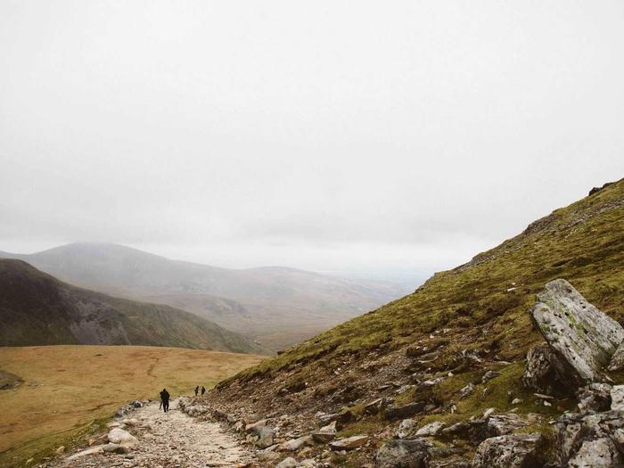
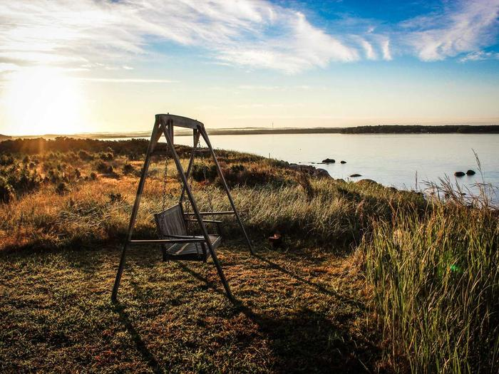

Dependente de industriário
Filhos e dependentes de trabalhadores da indústria têm condição diferenciada.
Da Educação Infantil ao Ensino Médio, a Escola SESI forma estudantes com tecnologia, esporte e cultura — e prepara para o que vem depois.
4 e 5 anos
Aprender brincando: linguagem, movimento e convivência nos primeiros anos.
1º ao 5º ano
Alfabetização sólida, raciocínio lógico e robótica desde cedo.
6º ao 9º ano
Projetos, ciência e tecnologia para desenvolver autonomia.
1ª à 3ª série
Itinerários formativos e preparação para o ENEM e a vida profissional.
Condições especiais para famílias da indústria e parceiros. Os percentuais de cada caso são informados na secretaria.
Filhos e dependentes de trabalhadores da indústria têm condição diferenciada.
Desconto progressivo a partir do segundo filho matriculado.
Quem paga a anuidade à vista ou até a data de vencimento economiza.
Empresas parceiras do SESI estendem o benefício aos colaboradores.
A Escola SESI adota material didático próprio, alinhado à BNCC e usado em toda a rede. A lista de itens de uso pessoal muda por segmento.
O que faz da Escola SESI uma escola de referência.

Aulas de robótica na grade e equipes em torneios regionais e nacionais.

Estudantes premiados em olimpíadas de matemática, ciências e língua portuguesa.
Estrutura esportiva do SESI e atividades culturais no contraturno.
Escolha o seu caso e veja o passo a passo e os documentos importantes.
Onde me inscrever: escolha o jeito mais fácil para você.
Pré-inscrição em poucos minutos, de qualquer lugar.
Inscrever-se on-lineNa secretaria da escola, de segunda a sexta, das 8h às 18h.
Ver endereçoAs perguntas que mais recebemos nesta época. Não achou a sua? Fale com a gente.
Falar com a secretariaSim. A vaga do aluno veterano é garantida até o fim do prazo de rematrícula; depois dele, as vagas restantes são abertas para novos estudantes.
Não. A escola é aberta a toda a comunidade. O vínculo com a indústria dá direito às condições especiais de desconto.
Não há prova classificatória. Para alguns anos, a coordenação faz uma conversa diagnóstica para acolher melhor o estudante.
Depende da combinação. A secretaria simula o valor final com você no momento da matrícula.
Consulte a disponibilidade por segmento: as atividades de contraturno incluem esporte, reforço e cultura.